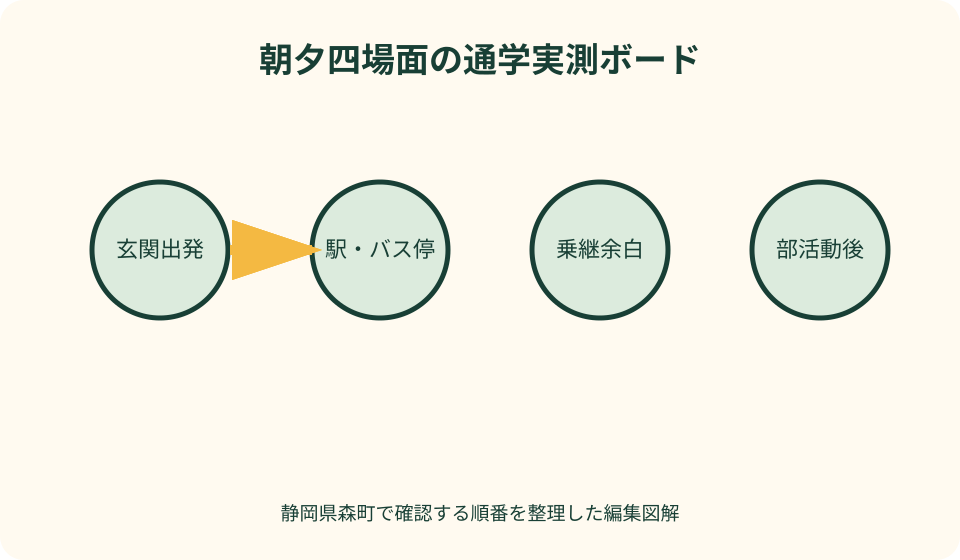
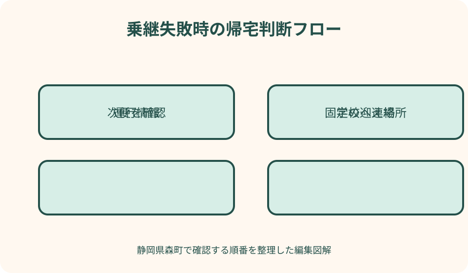

学校・就学・家庭記録｜最終確認 2026-08-10
静岡県森町から高校へ通う前に｜朝夕・雨・部活動後を実測
通学経路は、地図上で一本につながっていても、毎朝無理なく使え、部活動後にも帰れるとは限りません。静岡県森町では、天竜浜名湖鉄道、民間バス、町営バス、徒歩、家族送迎を組み合わせる家庭があります。入学後に初めて不都合へ気づかないよう、平日の登校時刻と下校時刻を使った実測方法を整理します。

編集イラスト通学は時刻表ではなく一日の往復で確かめる
通学経路の検討で最初に見るべき数字は、列車やバスの乗車時間だけではありません。玄関を出てから教室へ着くまでと、校門を出てから帰宅するまでの総時間です。駅まで家族が送れる朝だけを基準にすると、送れない日の計画が抜けます。
試走は休日の昼ではなく、できる範囲で実際に通う平日の時間帯へ寄せます。朝の交通量、駅へ向かう歩行者、自転車、踏切、バス停の待ち方は昼と同じではありません。学校敷地へ入る必要がある場合は、説明会など学校が認めた機会を使います。
一度の試走で合否を決めず、通常の登校、授業だけの日の下校、部活動後、雨天の少なくとも四つに分けます。冬は日没が早いため、夏の明るい夕方に歩けた道でも、照明や見通しを別に確かめる必要があります。
この記事は特定の学校への通学が成立すると保証するものではありません。始業時刻、遅刻時の連絡、部活動の終了、通学経路の届出、自転車利用などは学校ごとに違うため、入学予定校の最新案内を先に確認してください。
学校側の条件を先に一枚へ集める
実測の出発点は学校の条件です。登校完了とされる時刻、校門から教室までに必要な時間、朝のホームルーム、通学経路届の有無、公共交通が遅れたときの連絡方法を質問項目へ分けます。始業時刻だけを見て到着便を選ぶと校内移動の余白を失います。
部活動を予定しているなら、通常の終了目安だけでなく、大会前、冬季、試験期間、学校行事の日を尋ねます。毎日同じ時刻に終わる前提を置かず、何時までなら公共交通で帰れ、どの時点で家族へ連絡するかを家庭で決めます。
定期券を買う前には、学校が示す通学区間や証明書の扱いを確認します。鉄道とバスで購入方法が異なる可能性があり、通常の定期券と通学用の取扱いも同一とは限りません。合格後に学校と事業者の双方へ最新条件を照会します。
学校説明会や一日体験入学は、授業内容だけでなく通学実測の機会にもなります。ただし説明会の受付時刻と通常の登校時刻は別です。当日の特別な駐車案内や送迎誘導を、平常日の通学条件と混同しないよう記録へ明記します。
朝の実測は玄関から着席まで測る
朝は予定便の発車時刻から逆算し、起床、身支度、朝食、玄関出発、駅・バス停到着、乗車、学校最寄り到着、校内移動を時系列で書きます。最短記録を採るのではなく、信号待ちや改札前の確認を含めた通常の歩速で測ります。
自宅から駅・バス停までの道は、生徒本人が実際に使う荷物量で歩きます。教科書、弁当、雨具、部活動用品がある日は身軽な見学時より負担が増えます。急がなければ間に合わない計画は、毎日の基準として再検討が必要です。
予定より一本前を選ぶ場合は、到着後の待ち場所も見ます。早朝に建物が開いている、売店や店舗を使えると決めつけず、学校が認める登校時刻や駅の設備を確認します。長い待ち時間を安全性の根拠なしに生徒へ負わせません。
実測日は曜日、天候、家を出た時刻、各到着時刻、混み方、困った地点を記録します。春休み中の平日と通常授業期では利用状況が異なるため、可能なら学校が動いている時期にも保護者同伴で再確認します。
駅とバス停は乗る場所まで確認する
駅名や停留所名が分かっただけでは実測完了ではありません。どちらの方向へ乗るか、ホームや乗り場へどの入口から入るか、道路を横断するか、時刻表はどこに掲示されているかを現地で見ます。反対方向の時刻を写さないよう行先を併記します。
天竜浜名湖鉄道の遠州森駅について、遠江総合高校公式は駅から徒歩約十分と案内しています。ただしこれは自宅から駅までの時間を含みません。列車到着後にホームから道路へ出て学校へ向かう全区間を、実際の荷物と歩速で測ります。
無人となる時間帯や設備の利用条件は駅ごとに異なり得ます。切符の購入、定期券、運賃、乗り方は天竜浜名湖鉄道の最新案内へ戻ります。検索サービスの経路だけで、乗車前の手続きや支払方法まで確定しません。
バス停では屋根やベンチの有無だけでなく、待つ位置、車両から見えやすい立ち方、降車後の横断、夕方の照明を確認します。民家の敷地、店舗駐車場、車道上を待機場所にせず、事業者と道路表示に従います。

町営バスは予約便を同じ時刻表内で見落とさない
森町公式は町営バスとして大河内線と吉川線を案内し、事前予約が必要な便があると説明しています。同じ路線でも便により条件が異なるため、時刻欄だけを抜き出さず、予約手順、期限、運行日、停留所を一緒に確認します。
登校に使う予定の便が予約対象なら、毎日の予約が現実的に続けられるか、誰がいつ連絡するかを家庭の手順へ落とします。予約したつもり、保護者がするつもりという曖昧さを残さず、学校行事で時刻が変わった日の取消や変更も尋ねます。
町営バスから鉄道や別のバスへ乗り継ぐ案は、到着時刻と次便の発車時刻の差だけで判断しません。降車、道路横断、ホーム移動、乗車準備を実測し、一本目が少し遅れたときにも連絡や代案へ切り替えられるかを試します。
町営バスの時刻表、運賃、回数券、定期券は更新され得ます。本稿では数字を固定せず、利用開始前と新年度に森町公式を開き直す方法を採ります。印刷した資料には取得日を書き、現地掲示との違いがあれば運行窓口へ確認します。
天浜線と民間バスの乗継余白を測る
天浜線と民間バスを使う経路では、平常時刻表を別々に保存し、どの駅・停留所で接続するかを一行で結びます。同名に見える地点でも、鉄道駅前と道路上の停留所が離れている場合があるため、地図の線ではなく徒歩で測ります。
乗継余白は、理論上歩ける最短時間より長く見積もります。列車から最後に降りた場合、雨で階段や路面を急げない場合、バスが先に到着している場合を想定し、走らなければ成立しない接続は主経路にしません。
秋葉バスの運賃や定期券は事業者公式で確認します。路線検索サービスに表示された料金が、購入時の通学定期や利用区間にそのまま適用されると決めず、学校の証明、発売場所、利用開始日、紛失時の扱いを購入前に尋ねます。
朝は接続できても、夕方の逆方向が同じ間隔とは限りません。往路と復路を別の表へ置き、部活動のない日、ある日、試験で早く終わる日の三種類について、学校を何時に出ればどの便へ間に合うかを逆算します。
遅延した朝の学校連絡まで試す
天竜浜名湖鉄道の運行情報ページは、利用前に確認する重要な入口です。ただし同社は、おおむね三十分以上の遅れなどを掲載対象として案内しており、表示がないことが分単位の定時到着を保証するわけではありません。駅での案内も合わせます。
数分の遅れで乗継が外れる経路なら、そのとき学校へ誰が、何を、どの方法で連絡するかを決めます。生徒が乗車中で電話できない場合、保護者が状況を把握していない場合もあるため、学校所定の欠席・遅刻連絡方法を家族全員で確認します。
遅延証明の入手可否や提出要否は、鉄道事業者と学校の案内を分けて確認します。交通機関が遅れれば自動的に遅刻扱いにならない、あるいは必ず証明が出るとは断定せず、その日の連絡と後日の提出を別手順にします。
実測表には『予定どおり』だけでなく、『一本目が十分遅れた』『乗継を逃した』という仮想欄を作ります。次便、家族送迎、学校へ遅れて向かう判断、運休時の休校連絡を並べ、未成年が単独で場当たり的に選ばない仕組みにします。
下校と部活動後は別の帰宅表を作る
下校時刻は一つではありません。通常授業、短縮授業、試験、学校行事、部活動の終了後で学校を出る時刻が変わります。もっとも都合のよい一日だけでなく、頻度が高い通常日と、最も遅くなる見込みの日の両方を実測します。
部活動後は、片付け、着替え、顧問からの連絡で校門を出る時刻がずれることがあります。終了予定と実際に駅・バス停へ向かえる時刻を分け、一本逃した後の待ち時間、次便の有無、家族へ連絡する時点を決めます。
遅い時間の待ち場所は、昼に見た印象で決めません。照明、人通り、道路横断、雨を避けられる場所、連絡手段を現地で確認します。店舗や公共施設が毎日開いていて待機できると仮定せず、利用者として認められた場所かも確かめます。
帰宅経路の最終候補を逃した場合は、知らない夜道を歩き続ける案にしません。学校へ戻れる時間帯か、事業者へ確認できるか、家族が迎えに行く場所、連絡不能時に留まる場所を事前に決め、生徒の連絡カードへ記載します。
雨、冬の暗さ、暑さを条件に加える
雨の日は徒歩時間だけでなく、傘を差して狭い道を通れるか、靴や制服が濡れたまま授業を受けることにならないか、駅やバス停で荷物を置けるかを見ます。晴天時の最短時間へ数分足すだけでは把握できません。
自転車を組み合わせる場合は、雨天に徒歩や家族送迎へ切り替えたとき同じ便へ間に合うかを測ります。自転車通学の許可、ヘルメット、保険、駐輪場所は学校と施設の案内へ戻し、晴れの日だけ成立する計画にしません。
冬の下校は日没後になる可能性があります。昼間に見えた段差、側溝、横断箇所が暗いとどう見えるか、車から歩行者が見えやすいかを保護者と確認します。反射材や灯火は安全を補う道具であり、危険な経路を必ず安全に変える保証ではありません。
夏は駅や停留所で長時間待つ計画を避け、水分を確保できるかを考えます。体調が悪いのに予定便へ急がせず、学校へ申し出る、家族へ連絡する、涼しい適切な場所で待つという判断を家庭の連絡手順へ含めます。
定期券は経路確定後に比較する
定期券の検討は、地図上の最短経路ではなく、実測して続けられる経路が決まってから行います。鉄道、民間バス、町営バスを使う場合、購入先、発売時期、必要書類、利用区間をそれぞれ一覧にし、学校証明が必要かを確認します。
費用比較では定期券代だけでなく、駅までの家族送迎、自転車駐輪、雨天に別経路を使う日、部活動後の迎えを記録します。安価に見える案でも、毎週送迎が増えるなら家族の時間と車の負担を含めて比べます。
回数券や現金利用が適する期間もあり得ます。入学直後に部活動や帰宅時刻が確定しない場合、すぐ長期契約するかは事業者の払戻条件も確認して判断します。料金や発売条件は変わり得るため、本稿の数字ではなく購入日の公式案内を使います。
定期券を紛失した場合やスマートフォンが使えない場合の乗車方法も、事業者へ尋ねておきます。生徒には購入控えや連絡先を安全に保管させ、氏名、学校、行動予定を不特定の人へ見せる形で持ち歩かせません。
家族送迎は駅前停車ではなく受け渡し全体を決める
家族送迎を代案にするなら、迎えの車が来られるという一文だけでは足りません。誰が運転するか、勤務中に連絡を受けられるか、何分で着くか、迎えに行けない日は誰へ切り替えるかを曜日別に確認します。
待合せ地点は、駅や学校の入口に最も近い場所ではなく、公式の駐車・乗降案内と道路表示に従って選びます。路線バスの停留所、交差点、横断歩道付近、近隣店舗や私有地を短時間だから使えると考えません。
列車やバスが遅れたときは、生徒が車道沿いを移動して車を探さないよう、地点を固定します。運転者は走行中にメッセージを確認せず、到着後に連絡します。連絡がつかないときの待機時間と次の連絡先も決めます。
雨の夜はフロントガラス越しに制服姿を見つけにくく、他の送迎車も増えます。生徒が傘を差したまま車の間を横切らない動線を現地で確認し、混雑する学校行事の日は学校の臨時案内を優先します。
緊急帰路は連絡不能まで含める
災害、事故、車両故障、急な体調不良では、通常の時刻表どおりに帰れません。森町の防災情報、交通事業者の運行情報、学校の連絡を別々に確認し、生徒が一つのSNS投稿だけで移動を決めないようにします。
スマートフォンの充電切れや通信障害も想定します。家族の電話番号、学校、利用する交通事業者、迎えの集合地点を紙でも持ち、公衆電話や駅員・乗務員へ助けを求める場面を家庭で話します。知らない人の車へ乗る代案は置きません。
大雨や土砂災害のおそれがあるとき、通常経路を歩いて帰ることが適切とは限りません。学校の引渡しや待機指示、町の避難情報を優先し、家族も危険な道路へ迎えに向かうと決めつけず、移動開始前に情報をそろえます。
緊急表には『生徒が学校にいる』『駅で足止め』『乗継先へ着いた』『家族が迎えに出られない』の四場面を作ります。それぞれの最初の連絡先、留まる場所、次に確認する公式情報を一行で示すと、焦ったときにも使えます。

一週間の実測記録を家族で読む
実測表は一日ごとの成功・失敗ではなく、続けたときの負担を見るために使います。出発、学校到着、校門を出た時刻、帰宅、待ち時間、乗継、送迎者、天候、困った点を同じ列で記録し、曜日による差を探します。
本人の感想は『大丈夫』『疲れた』だけで終わらせず、どの区間で急いだか、待ち時間をどう感じたか、荷物を持てたか、暗い場所はどこかに分けます。保護者の都合だけで持続可能性を判定しません。
保護者は送迎時間、仕事への影響、きょうだいの予定、車を使えない日を追記します。本人の通学時間が短くても、家族が毎日長距離を二往復する案なら、代替運転者と公共交通案を残して比較します。
試走後は学校、駅、バス事業者へ残った疑問だけを具体的に聞きます。『通えますか』ではなく、『この便が遅れて接続を逃した場合』『部活動後にこの停留所を使う場合』のように条件を伝えると、確認すべき担当が明確になります。
良い点
森町からの通学を実測する良い点は、時刻表上の所要時間では見えない待ち時間と歩行負担を、入学前に家族で共有できることです。本人が無理なく続けられる案と、保護者が毎日支えられる範囲を同じ表で比べられます。
天浜線、バス、徒歩、送迎を役割ごとに分けると、一部が使えない日の代案も考えやすくなります。すべてを一つの完璧な経路へ賭けず、通常経路、雨天経路、遅延時経路を用意できます。
学校の説明会と交通事業者の公式案内を照合すれば、学校到着だけでなく定期券、乗継、帰宅まで質問できます。生徒本人が駅名、行先、連絡先を理解する練習にもなり、家族任せの計画から一歩進めます。
記録は転居や部活動変更の際にも使えます。ただし古い時刻表を答えとして再利用せず、どの条件が変わったかを探す比較表として扱います。学期や年度が変わる前に、公式時刻表と学校予定を更新します。
注文したい点
利用者として注文したいのは、鉄道、民間バス、町営バス、学校の案内が別々に更新されるため、一画面だけで部活動後まで判断しにくい点です。家庭側では閲覧日と対象年度をそろえ、古いPDFが混じらないようにします。
経路検索は便利ですが、予約便、学校の校内移動、駅前の乗り場、遅延時の連絡までは示さないことがあります。検索結果の到着時刻を印刷して完成とせず、各運営者の公式ページと現地で裏を取る作業が必要です。
学校からは、遅刻連絡、部活動後の下校、災害時の引渡し、送迎時の乗降場所を、新入生向けに一連の流れで示してもらえると家庭が準備しやすくなります。分からない事項は説明会で早めに質問します。
交通事業者へは、初めて利用する生徒にも予約便や定期券の違いが伝わる案内を期待します。一方で運行条件は変化するため、記事が古いと決めつけて問い合わせるのではなく、見たページと日付、利用予定便を伝えて確認します。
代案・結論
第一案が成立しないときは、一本早い便、別駅、別のバス停、家族送迎との分担、学校近くまでの自転車などを一案ずつ比較します。どの代案も学校の許可、道路状況、駐輪条件、事業者の運行を確認し、使えると断定しません。
部活動後だけ公共交通が難しい場合は、活動日を踏まえた迎え、終了時刻の相談、参加方法の再検討を学校と家庭で話します。本人の希望を無視して送迎だけで決めることも、交通条件を見ずに参加を約束することも避けます。
通学計画の結論は、最短時間の経路ではなく、通常朝、通常下校、部活動後、雨天、遅延、連絡不能の各場面に答えがある経路です。どれかが空欄なら不合格という意味ではなく、入学前に誰へ確認するかが見えた状態と捉えます。
最後に、学校の最新予定、森町営バス、天浜線、民間バスを利用開始直前に開き直します。実測日からダイヤや学校運用が変わっていれば再計算し、生徒が自分で行先と連絡先を説明できるところまで家族で確認します。
大石の視点
森町で暮らす家庭の通学検討は、『駅に近い』『車で送れる』という物件紹介の一言では足りません。大石の視点では、平日の朝夕を本人の足で測り、家族の勤務と車の利用まで重ねて初めて生活動線として評価します。
遠州森駅に近い家でも、進学先が駅から離れていれば乗継が増えます。山間部の家でも、家族送迎と町営バスの時間が合う場合があります。住所から学校までの直線距離だけで、通いやすさや不便さを決めません。
住まいを選ぶ段階なら、合格前の一回だけでなく、冬の夕方、雨の日、部活動後を想定して候補地から駅・停留所を歩きます。不動産の価格判断と通学の実測は別物ですが、毎日の送迎時間は住み続ける負担として記録する価値があります。
私が家族へ残したいのは、成功した試走の写真ではなく、乗継を逃したらどこで待つか、迎えが来られなければ誰へ連絡するかを書いた一枚です。通学成立を楽観も悲観もせず、一次情報と現地の事実で更新できる計画にします。
入学前の最終確認表
最終確認表の上段には、学校名、登校完了時刻、通常下校、部活動後、学校の連絡方法を書きます。中段には往路と復路の便、予約の要否、乗継余白、定期券購入先を置き、下段には雨天、遅延、家族送迎、緊急帰路を並べます。
各項目には確認先と確認日を添えます。学校から聞いたこと、森町公式にあること、天浜線やバス事業者が示すこと、家庭で決めることを色分けすれば、誰の回答か分からないメモを減らせます。
入学後の最初の一週間は、実際の出発・帰宅時刻と疲労を記録し、計画との差を見ます。予定より余裕がなければ、一本前へ変える、荷物の持ち方を学校へ相談する、迎えの日を増減するなど、小さく調整します。
今日の一歩は、志望校の公式案内から通常の登校と下校に関する質問を三つ作り、森町公式の町営バス案内、天浜線時刻表、利用予定のバス公式を同じ日に保存することです。そのうえで朝夕二回の試走日を決めてください。
公式情報・確認先
掲載内容は次の一次情報を基礎に整理しました。営業、料金、催し、交通は変わるため、出発前または手続き前にリンク先で最新情報を確認してください。
- 森町営バスのご案内（静岡県森町、2026-08-10確認）
- 森町地域公共交通法定計画（静岡県森町、2026-08-10確認）
- 学校教育課（静岡県森町、2026-08-10確認）
- 森町の防災情報（静岡県森町、2026-08-10確認）
- 遠州森駅（天竜浜名湖鉄道、2026-08-10確認）
- 時刻表（天竜浜名湖鉄道、2026-08-10確認）
- 運行情報（天竜浜名湖鉄道、2026-08-10確認）
- 運賃・定期券（秋葉バスサービス、2026-08-10確認）
- 遠江総合高校へのアクセス（静岡県立遠江総合高等学校、2026-08-10確認）